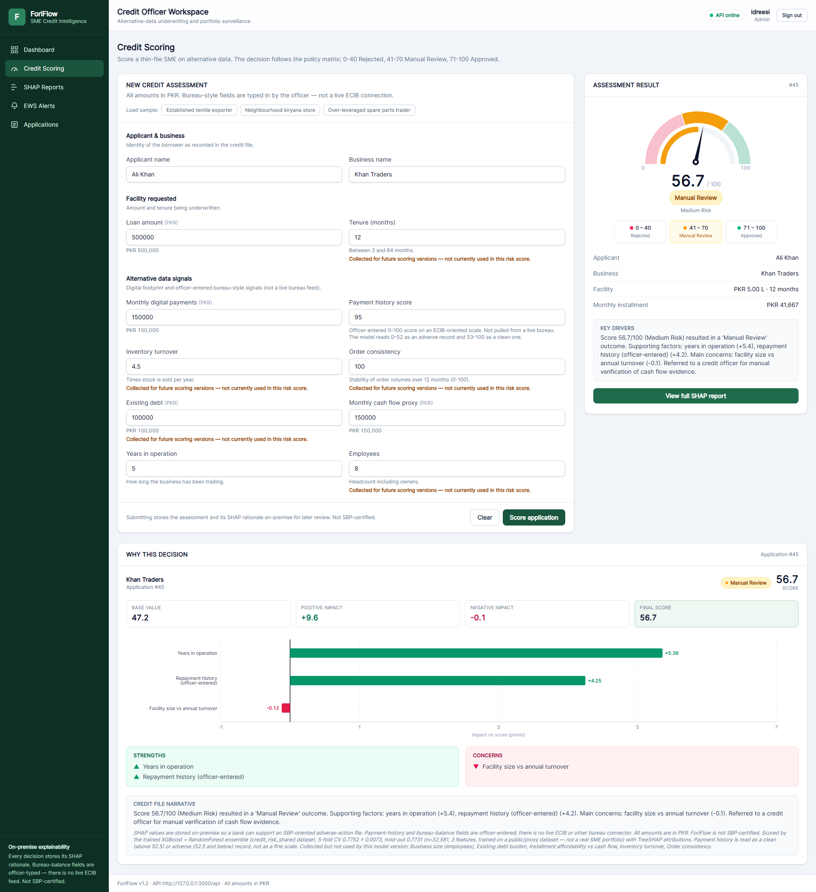
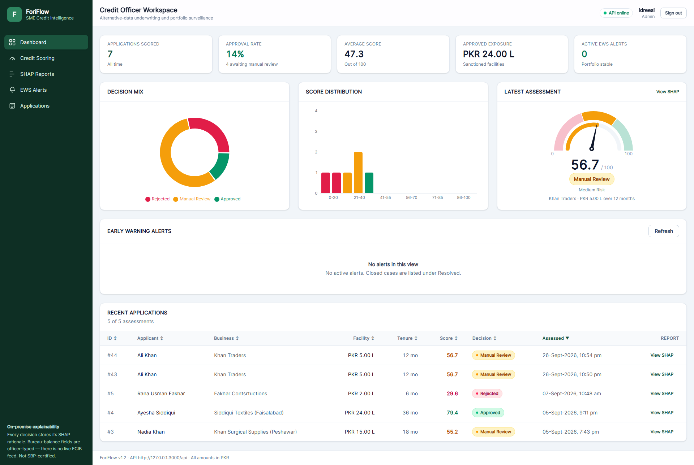

F
ForiFlow
SME credit scoring and Early Warning — on-premise FYP prototype
0.7758
Served 5-fold CV AUC-ROC ± 0.0075
hold-out 0.7756 · F1 0.544 · n = 32,581
hold-out 0.7756 · F1 0.544 · n = 32,581
3
Served ML features
loan_to_income · payment history · years in operation
loan_to_income · payment history · years in operation
>15
EWS alert if the derived monthly score drops more than 15 points from origination
JWT
On-premise HS256 login · 8 hours
admin / analyst · PostgreSQL 16.6
admin / analyst · PostgreSQL 16.6
Origination pipeline
1
Intake
12 fields · PKR2
Ratios
currency-invariant3
Ensemble
XGB 0.60 · RF 0.404
SHAP
TreeExplainer5
Decision
0–100 score
0–40 Rejected
41–70 Manual review
71–100 Approved
risk_score = 100 × (1 − PD). Relative ranking after SMOTE-in-CV, not a calibrated default probability. Inventory turnover, order consistency, headcount, existing debt, and tenure are stored; they do not move this ensemble. AUC-ROC 0.85 is a bank-data target — the three-feature ladder ceiling is 0.7776 ± 0.0067 and was not shipped.
On-premise stack
Officer dashboardnginx · :3000 · /login
FastAPI + ensembleuvicorn · :8000 · /api
PostgreSQL 16.6127.0.0.1:5432 · Alembic
Compose requires POSTGRES_* and JWT_SECRET_KEY. Migrations run on backend start. Seed the officer with python -m scripts.seed_admin — not automatic. GET /health is public; /score and /ews need a Bearer token. Designed for SBP-oriented explainability; not SBP-certified.


Early warning
- Officer submits a month: ageing bucket, bureau balance, POS inflow.
- Current score is a rule on the origination baseline — the ensemble is not re-run.
- Alert if drop > 15.0. Days-to-default is a 7–365 heuristic, not a validated 60–90 day lead time.
What the model uses
- Winner: credit_risk_shared (21.82% default rate).
- Rejected files: combined_shared 0.652 · loan_default_full 0.622.
- Give Me Some Credit 0.8656 is a consumer proxy only — not SME performance.
Pilot access
- http://localhost:3000 dashboard
- http://localhost:8000 API
- Postgres loopback only
- github.com/Idreesi8/ForiFlow